Helix Logistics
Safe skies. Critical deliveries. Autonomous infrastructure for when failure isn't an option.


The problem
Orthopedic surgery runs on implant sets that are shipped to the hospital for each case: the right sizes, the right instruments, on the morning of surgery. Outside major metros those sets travel long distances by ground courier from regional distribution centers.
In customer discovery, orthopedic surgeons told us they had cancelled surgeries because a set did not arrive on time. The cause was logistics, not the patient's condition. Device distributors confirmed the other side of it: every missed delivery cascades into rescheduled operating rooms, expedited shipping and strained hospital relationships.
Rural and semi-rural hospitals feel this most. They sit far from distribution centers, have fewer local backup inventories, and depend on a single road route that weather and traffic can close.
The solution
Helix is an autonomous middle-mile network: hybrid-electric VTOL cargo aircraft that fly implant sets from a distribution hub straight to a hospital pad, around the clock and in most weather. What makes it viable is the software layer. Flying safely beyond line of sight, over people, in shared airspace, needs the kind of safety-critical autonomy NASA has spent decades developing.
We screened NASA's technology-transfer catalog and built the concept around these capability areas:
These technologies were evaluated from NASA's public technology-transfer catalog as part of the capstone. No licenses were obtained.
Market & model
Beachhead: Paducah, Kentucky. A regional medical hub roughly 200 road miles from the nearest major distribution center in Louisville, with active orthopedic practices and a single highway corridor. Its profile of long distance, real surgical volume and thin backup inventory repeats across the rural Southeast.
Market sizing. Counting only hospitals and ambulatory surgery centers in our six focus states gives about 3,660 procedural sites. A 300-mile radius around six to eight micro-fulfillment hubs reaches most of them. Our 24-month target was 10–30 anchor accounts (health systems and surgery-center chains), which translates into 100–400 facilities.
Software licensing
License the autonomy and airspace stack to drone operators, utilities and defense contractors. Early revenue that proves the technology without the capital cost of a fleet.
Turnkey medical delivery
Operate delivery for orthopedic distributors and hospitals on a monthly subscription, starting in Paducah and scaling to a hub network across the Southeast and Texas.
| Delivery plan | Monthly price | Deliveries included |
|---|---|---|
| Core | $69,999 | up to 450 |
| Growth | $89,999 | up to 600 |
| Network | $109,999 | up to 750 |
Funding path: SBIR/STTR grants for the licensing and engineering work, then a seed round. The pitch closed on an ask of $150K for 20% plus technical hires.
The prototype
The original capstone demo was a Python dashboard with four live panels: powertrain health, UAS traffic, validation deviation and unified telemetry, plus a basic drone control panel. It simulated small drones over Orlando.
This rebuild is the console that dashboard was pointing toward, set in the beachhead market:
- A fleet of Chaparral-class hybrid VTOL aircraft (8 lift and 4 cruise propellers, 300–500 lb payload, about 300 miles of range) flying Louisville → Paducah and to five other western Kentucky hospitals.
- Two consoles in one: a dispatcher view for orders, fleet and mission status, and a flight ops view for one aircraft's health, navigation, telemetry, wind and traffic.
- Nine injectable events (intruder aircraft, pop-up flight restriction, gust front, motor wear, lift-motor failure, generator failure, GPS drift, link loss, fog) that exercise each capability. Some ask the operator for a decision.
- A four-minute guided demo that walks through a full delivery with every system tested along the way.
Aircraft performance beyond the manufacturer's published payload and range is a modeling assumption. Geography is simplified, and facilities, registrations and traffic are fictional. Not affiliated with or endorsed by NASA or Elroy Air.
Team
Faculty mentor: Peter McAlindon. Crummer Graduate School of Business, Rollins College, in partnership with NASA Kennedy Space Center technology transfer.